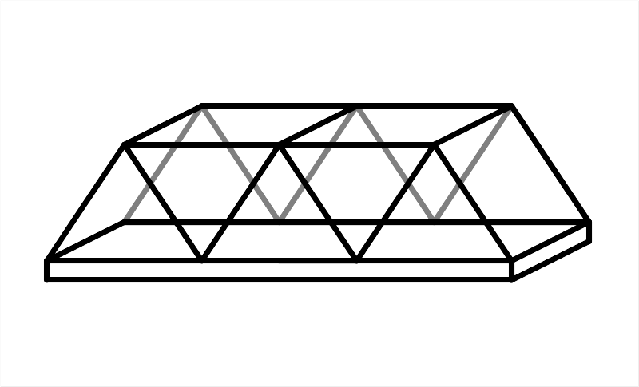

Introducción a las Estructuras¶
- Estructura
- Es un conjunto de elementos destinados a soportar esfuerzos sin romperse ni deformarse.
En la naturaleza existen multitud de estructuras desde el tronco que sostiene un árbol hasta nuestro esqueleto. Todas ellas soportan esfuerzos para superar la gravedad y en el caso de los esqueletos también permiten el movimiento.
En el ámbito técnico la construcción de estructuras para fabricar viviendas, barcos o vasijas es tan antigua como la propia civilización. Hoy en día las estructuras pueden ser muy complejas y permiten construir edificios, automóviles, aviones, puentes, torres de alta tensión, presas y un sinfín de aparatos sin los cuales el mundo actual, tal y como lo conocemos, no existiría.
Origen de las estructuras¶
Las estructuras se pueden diferenciar dependiendo de su origen:
| Naturales | Tronco de un árbol. Caparazón de tortuga. Esqueleto humano. Conchas de moluscos. Nido de pájaro. |
| Artificiales | Puente colgante. Estructura de un edificio. Carcasa de ordenador. Grúa de obra. Muralla. |
Clasificación de las estructuras¶
Dependiendo de sus elementos podemos clasificar las estructuras en los siguientes grupos:
- Masivas
Formadas por una gran masa de material sin apenas huecos.
Ejemplos: Presa de agua. Pirámide. Murallas.
- Abovedadas
Formadas por arcos y bóvedas.
Ejemplos: Techo de catedral gótica. Puente romano. Acueducto. Panteón de Roma.
- Trianguladas
Formadas por barras unidas entre sí en triángulos.
Ejemplos: Grúa de obra. Torre Eiffel. Torre de alta tensión.
- Entramadas
Formadas por elementos verticales y horizontales.
Ejemplos: Estructura de edificio. Sillas y mesas. Escalera de mano.
- Colgantes
Formadas por cables que soportan las cargas.
Ejemplos: Teleférico. Puente atirantado o puente colgante. Grúa de obra. Tirolina.
- Laminares
Formadas por una lámina o pared delgada.
Ejemplos: Cuenco. Caparazón de tortuga. Casco para moto. Depósito de agua.


{kind=link}
{kind=link}
{kind=link}
{kind=link}
{kind=link}
Movimiento en las estructuras¶
La mayoría de las estructuras se construyen para que no puedan moverse. Sin embargo algunas estructuras deben permitir el movimiento para poder funcionar correctamente. Estas estructuras seguirán resistiendo los esfuerzos y su propio peso sin romperse, pero permitirán el movimiento de alguna de sus partes.
- Estructuras móviles
Se pueden desplazar o están articuladas. Soportan cargas mientras permiten el movimiento.
Ejemplos: Puerta con bisagra. Puente levadizo. Silla con ruedas. Grúa.
- Estructuras fijas
No se desplazan ni se pueden mover.
Ejemplos: Puente. Edificio. Torre de alta tensión. Cuenco.
Ejercicios¶
Enumera cuatro estructuras naturales y cinco artificiales.
Enumera cuatro estructuras masivas.
Enumera cuatro estructuras abovedadas.
Enumera cuatro estructuras trianguladas
Enumera cuatro estructuras entramadas
Enumera cuatro estructuras colgantes
Enumera cuatro estructuras laminadas
Indica las diferencias entre las estructuras trianguladas y entramadas
Clasifica las siguientes estructuras:
- Acueducto
- Caparazón de tortuga
- Carcasa de ordenador
- Casco
- Conchas de moluscos
- Cuenco
- Esqueleto humano
- Estructura de edificio
- Grúa de obra
- Iglesia
- Mesa
- Muralla china.
- Pirámide.
- Presa de agua.
- Puente atirantado.
- Puente colgante.
- Puente romano
- Silla
- Teleférico
- Torre de alta tensión
- Torre Eiffel
- Tronco de un árbol
Indica a qué tipo de estructura se refiere cada una de las siguientes frases:
- Formada por cables que soportan las cargas.
- Formada por elementos verticales y horizontales.
- Formada por arcos y bóvedas.
- Formada por una gran masa de material sin apenas huecos.
- Formada por una lámina o pared delgada.
- Formada por barras unidas entre sí en triángulos.